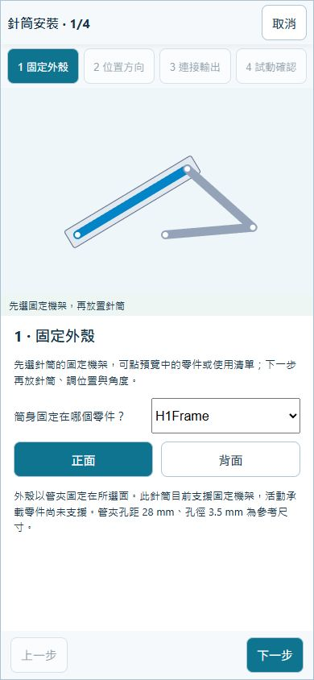
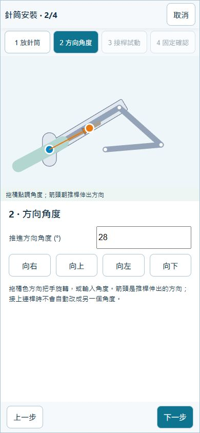
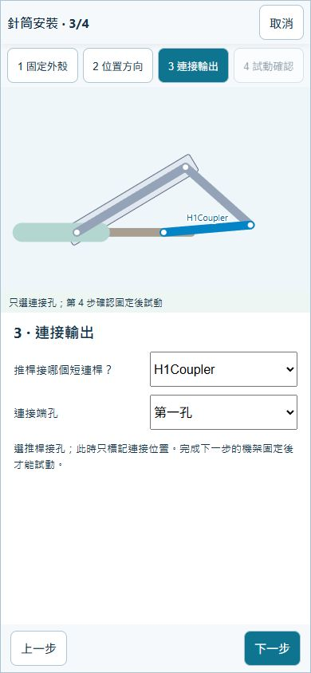
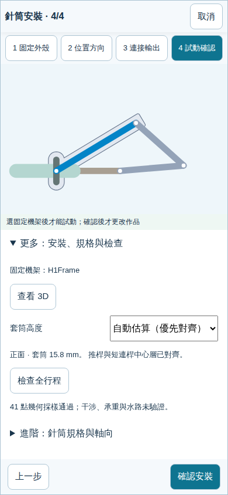
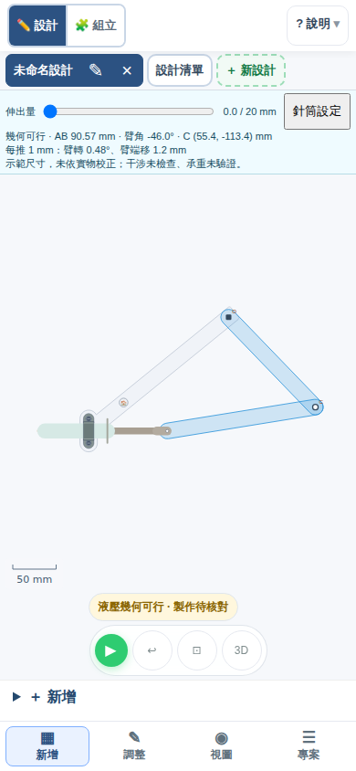
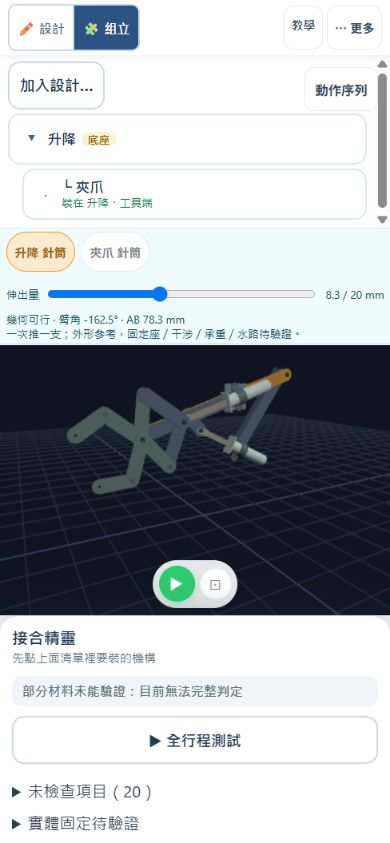
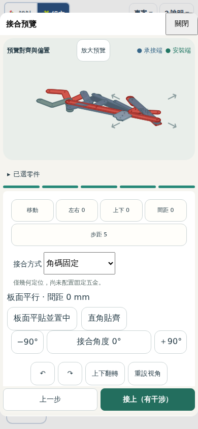
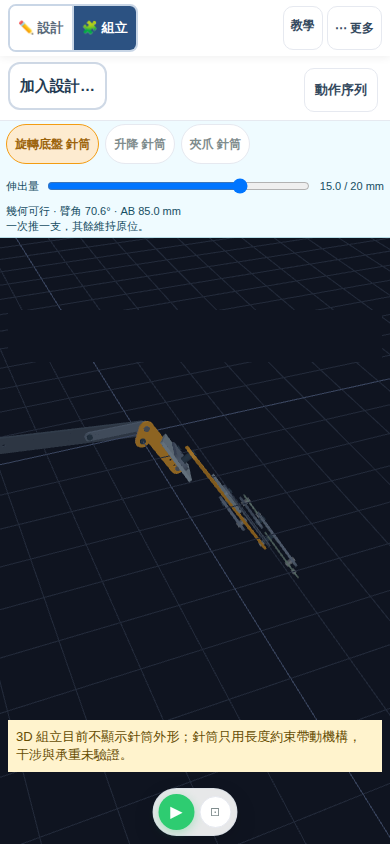

接續第七單元｜連桿與組立技能，換成針筒驅動
第八～十一單元：讓針筒帶動自己的機械手臂
你已會畫桿、接孔、改尺寸與組立。接下來先親手裝上一支針筒，再做升降、夾取，最後組成「底座左右轉 → 手臂上下動 → 末端夾取」。第八課照圖做，第九課減少提示，第十、十一課自己組合與驗證。
單元編號是學習順序；H01～H06 是既有範例代號。載入練習會替換目前作品，已有作品先保存。每課只需開練習；完整範例收在參考區，不必先開成品、下載，再另開空白。
第八單元：親手裝上針筒，推動單臂
先認識：固定的外殼、移動的推桿
- 機架＋管夾
固定針筒外殼 - 推桿直線伸縮
接短連桿端孔 - 短連桿兩端可轉
帶動擺臂走圓弧
複習：共用孔才算接好；固定螺絲與活動轉軸用途不同。
這和第二單元的曲柄滑塊有關：先前由旋轉帶出直線，現在由直線伸縮帶出擺動。先猜：推桿伸出，臂端會往哪裡移？
動手做：先選兩點，再試動
新版安裝預設先在圖上點固定機架的位置，再點活動短連桿端孔，預覽會將推進方向對準該孔。拖伸出量試動後確認；取消不改作品。本課要精確比較位置與角度，請按「調整安裝」使用下列四步；規格、3D 與行程檢查收在「更多：安裝、規格與檢查」。
- 找出三根桿：H1Frame 是兩端固定的機架，H1Arm 是活動臂，H1Coupler 是短連桿。還沒有針筒時不能自行運動，先不要把自由孔改成固定點。
- 手機按「新增 → 動力來源 → 10cc液壓針筒（管夾固定）」，按「調整安裝」。第 1 步「固定外殼」選 H1Frame、正面；管夾鎖筒身，不能把推桿一起鎖死。
- 第 2 步「位置方向」把筒身基準放在機架第一孔：X＝−100、Y＝−60 mm，向右 0°。可以拖藍點與橘點；本課先輸入參考值，避免手指點位誤差。
- 第 3 步「連接輸出」選 H1Coupler、第一孔。另一端已接活動臂，不能把推桿直接鎖到活動臂的固定軸心。
- 第 4 步「試動確認」拖「試動伸出量」到兩端，按「檢查全行程」。查看 3D，辨認機架、管夾與推桿。通過後「確認安裝」；取消不改作品。
- 只把筒身基準沿機架向另一端移動約 2 mm，保持 0° 方向與其他尺寸不變；可拖藍點後按「移到所選機架」。重新掃描並比較兩端臂的位置。這是改一項安裝位置，須另核對承托面與管夾孔；幾何可解不等於鎖得住。比較後取消，保留原安裝。




自己檢查：筒身不動、推桿走直線、短連桿兩端能轉、擺臂繞固定孔轉。保存 JSON 並重開再試動。說明：「少了機架固定」或「少了短連桿」，為什麼不能當作完成？
卡住時：從固定、接點、尺寸依序找原因
沒有機架可選：檢查機架兩孔是否都固定。找不到可接短連桿：檢查另一端是否共用擺臂的活動孔。行程不能走完：先核對方向、安裝位置與尺寸；保留錯誤訊息，取消或復原，別用增加固定點硬湊。
需要比較時才開 H01 完整參考 ↗（載入前保存自己的作品）。
加做：從空白畫三根桿，再用同一流程安裝
在目前作品按「＋ 新設計」，保留原範例作比較。手機先選「新增」，點「連桿」畫兩個端點；需要編輯時切「調整」。這次把每根桿當成有孔的積木，名稱和畫的方向不限。
- 機架：從左下往右上畫一根斜桿，分別點兩端孔，按「固定在底座」。兩孔都固定，這根桿才是不動的基準。
- 擺臂：從機架右上孔開始，吸附同一個孔，往右下畫活動臂。不要把新畫的末端固定。參考圖的機架約 208 mm、活動臂 144 mm；可點桿身改孔距。
- 短連桿：在機架左下孔的右方留出約 100 mm 筒身空間，畫第一個自由孔，再接到活動臂末端。兩根桿要共用同一個末端孔；線條碰在一起不等於連上。參考圖短連桿約 173 mm，尺寸是自畫練習，不是實物加工規格。
- 先選機架：新增 → 動力來源 →「10cc液壓針筒（管夾固定）」，按「調整安裝」。第 1 步「固定外殼」先點固定機架，或從清單選取，再選管夾安裝的正面／背面。選機架只決定固定基準，還沒決定針筒位置與角度。
- 放針筒、調角度：第 2 步在所選機架上點一下放置筒身，拖藍點沿桿移動、拖橘點轉方向，也能輸入 X／Y 與角度。這個練習將藍點放在機架左下孔，選「向右」0°。數值位置若不在機架上，可按「移到所選機架」。
- 接推桿：第 3 步選短連桿沒有接擺臂的端孔。保留你選的方向與原連桿姿態，此時尚不能試動；清單可以分清重疊零件。
- 確認固定並試動：第 4 步「試動確認」核對機架名稱與套筒高度；安裝面在第 1 步設定。連接與固定有效後，才拖「試動伸出量」、按「檢查全行程」並查看 3D。缺桿或接點未接妥時不能試動；需換機架或安裝面可直接點第 1 步，需改位置角度點第 2 步；已安裝的針筒會直接開啟設定摘要。核對後「確認安裝」，取消會保留原作品。幾何通過不代表實體接合、承載或水路已驗證。
- 完成核對：推桿走直線，擺臂繞機架孔轉；只把臂長增加 8 mm，掃描、套用再按「復原」，應回原尺寸。保存 JSON 後重開，再推到行程兩端。最後說出機架、輸入與輸出各是什麼。

第九單元：同樣伸縮，做出升降與夾取
複習：四步安裝與全行程檢查。新重點：連桿接法與孔位決定輸出動作；同樣伸出 20 mm，結果不一定相同。
A・升降 H02：比較驅動孔位
- 先找固定機架、短連桿和有三個孔的長臂。用第八單元的四步自行安裝；對照下方參考值放置，完成全行程檢查。
- 把伸出量放到 10 mm，讀「每推 1 mm」的臂轉角與臂端位移，記下原孔距約 172.42 mm 的讀數。
- 「針筒設定 → 更多：安裝、規格與檢查 → 進階 → 其他尺寸與加工設定」，保持臂端距主軸 250 mm，只把驅動孔位選成 145.89 mm，掃描候選全行程再套用。不要直接改三點板的一條邊，否則不是同一個比較條件。
- 同樣回到 10 mm 比較讀數，再看 16 mm 附近是否折返。最後復原，保存可重開的升降作品。
安裝提示與比較參考（需要時再看）
機架 H2Frame／正面，位置 X＝59.27、Y＝100.62 mm，方向約 153.57°；輸出接 H2Coupler 第一孔。負數可先輸入數字再按「±」切換正負。輸入位置後按「移到所選機架」，把小數取位的誤差投影回機架，再往下接孔、掃描；讀數以自己的安裝結果為準。原完整範例在 10 mm：172.42 mm 孔約 0.32°／mm；145.89 mm 孔約 0.09°／mm，並在行程中折返。不是「孔愈靠近支點一定轉愈多」。
H02 完整參考 ↗；先保存自己的作品。

說明原因：短連桿與臂的角度也會改變運動傳遞，不能只看孔到支點的距離。每推 1 mm 是幾何讀數，不能據此宣稱實物較省力或能舉多重。
B・針筒夾具 H03：這次自己判斷接法
保存升降作品後再開夾具練習；這是另一件作品。這次不逐步列按鈕，試著自己完成固定、方向、接孔與試動。
- 找機架、兩支短連桿的共用推桿孔，以及左右交叉臂。先預測伸出時端孔距增大還是減小。
- 安裝一支針筒，不必左右各裝一支：兩支短連桿已共用同一個推桿孔。完成全行程檢查，再比較 0、10、20 mm 的姿態。
- 點任一夾臂，觀察交叉段與末端夾持段一起選取、轉動：它們是同一片剛性板，不是折角處還有一個活動關節。複習第六單元的三點板。
- 只把試動伸出量從 10 改到 15 mm，比較開合；回到 10 mm 後保存 JSON、重開試動。下一單元可繼續用這個夾爪。
夾具安裝提示（先自己試）
H3Frame／正面，X＝−26、Y＝253.37 mm，方向約 0.62°；負數可先輸入數字再按「±」切換正負。輸入位置後按「移到所選機架」，再接 H3Upper 第一孔，該孔與 H3Lower 第一孔共用。不同安裝位置會重新決定最短距離；若與參考讀數稍有差異，先比較接法和方向，不要硬改固定點。
H03 完整參考 ↗；先保存自己的作品。

完成證據：升降與夾具各有可重開的作品，能獨立裝上針筒並說明伸出時的動作。夾臂端孔距不是夾持面淨開口；此處尚未驗證抓住物件。
第十單元：自己組成升降＋夾爪
任務：沿用第九單元的夾爪，加入升降模組，完成接合與動作序列。這次複習第七單元「選零件 → 選面 → 選位置」，動力改用兩支針筒。
回工作區，繼續自己的夾爪作品 ↗若不是你的夾爪作品，先用「開啟作品」載入第九單元保存的 JSON。不要從頂部「範例」取代它。
- 在自己的夾爪作品按「新增 → 加入模組（保留作品）」加入針筒升降臂；已有自己的升降分頁便直接使用。先分別試動兩支針筒，確認各自可用。
- 切到「組立」。按「加入設計…」，展開「未加入組立的設計」，在針筒升降臂那列按「加入組立」；已在清單中的夾爪不用再加。若夾爪名稱旁顯示「準備接合」，先按它：原設計、孔距與針筒設定保留，會成為可選取的接合項目；這不是載入另一份夾爪。
- 點清單的「針筒升降臂」，若尚未標示「底座」，按「設為底座」。再點自己的夾爪 → 接合預覽。第 1 步承接設計選「針筒升降臂」，零件選「臂端」（自行畫的升降則選活動長臂）；按「下一步」。第 2 步安裝零件選「H3Frame」（自己的夾爪機架桿），再按「下一步」。不要選升降的 H2Frame 或機架底板，它們不會帶著夾爪升降。
- 兩端都選「上面／下面（板面）」，讓兩塊板面平行；不要把「前面／後面（外框邊）」當成板面。到第 5 步可按「板面平貼並置中」，再調左右、上下及接合角度，讓夾爪靠近長臂工具端。確認顯示「板面平行」後再接上；需要時調間距避讓。選錯可取消，裝錯可拆下或復原。
- 先推升降，整個夾爪應跟隨；再推夾爪，升降位置應保持。各試 0、10、20 mm，並觀察 3D。定位完成不代表管夾、螺絲與水管已完成實物避讓。
- 記下自己機構的低位、高位、張開、收攏各對應多少 mm。按「動作序列」，依自己的值排張開 → 下降 → 收攏 → 抬起 → 張開，每步選一支針筒、目標 mm 與時間。先「驗證」再「播放」，最後「儲存序列」。
- 只交換「抬起」與「收攏」的順序，比較途中姿態，再恢復合理的取物順序。保存 JSON、重開確認接合與序列，匯出 MP4。
別直接抄參考值：H05 的夾爪是「推出收攏」的組合變體，與第九單元 H03 的交叉夾臂不同。使用自己的夾爪時，先試兩端，再填張開／收攏的數值；一支針筒可帶動多根連桿，兩支針筒讓升降與開合能分別控制。

需要比較時：H05 完整組合參考
開啟 H05 完整參考 ↗（先保存自己的作品）。它沿用 H02 升降，組合時朝上轉 40°，夾爪使用推出收攏變體；這是安裝姿態參考，不要求自創作品抄同一組偏移。推升降時整組夾爪跟隨，推夾爪時臂不動。
參考圖的分層只代表指定板件姿態的配置。完整行程、針筒外形、五金與管路干涉仍須另外核對。
完成證據：自己的兩軸接合、可重開的 JSON 和順序清楚的影片。說出夾爪為何要接活動長臂，而不是固定底板。畫面上的「收攏」只代表開合動作，不代表物件已被抓住。
第十一單元：加上左右轉動，完成自己的取放任務
新重點：底盤在水平面左右轉，升降臂在垂直面上下擺；夾爪跟著上層移動，再獨立開合。此處上下運動沿圓弧，夾爪不會自動保持水平。
保留第十單元作品，先寫一句需求：從左側低位移到右側高位。決定取物方向、低位與放置方向、高位，完成「左右轉動 → 上下移動 → 末端夾取」三軸配合。
繼續自己的兩軸作品 ↗先試轉盤 H04，再安裝上層
- 在現有作品「新增 → 加入模組」選針筒旋轉底盤。到這個設計分頁單獨試 0～20 mm，俯視圖中轉盤繞中心轉；轉盤上的活動板才是承接上層的位置。
- 回組立加入旋轉底盤，選它「設為底座」。選升降接合：承接端為旋轉底盤的活動轉盤板（完整參考稱 H4Turn，加入模組後編號可能不同），安裝端為升降機架。夾爪仍接在升降臂上，不要重新加一份。
- 選零件、面與位置，把升降平面垂直立在轉盤上。可先取消「加入角碼固定孔」確認幾何定位；這時是「已定位，尚未固定」。看 3D 檢查夾爪是否在底盤上方、桿件是否穿入，再調位置與間距。
- 分別推三支針筒：底盤轉時帶著升降與夾爪一起轉；升降只帶夾爪上下；夾爪開合不改變下層位置。若只有轉盤在動，先查是否誤接固定底板。
- 依自己的伸出量排轉到取物方向 → 張開 → 下降 → 收攏 → 抬起 → 轉到放置方向 → 張開。逐步試動，再驗證完整序列。沒有實際物件接觸模擬，以末端位置、方向與順序作幾何驗收。
- 只改一項目標，例如放置方向或升起高度，調整對應針筒的目標 mm，重新驗證；如果超過範圍，回相關設計調整孔位或尺寸，不能只把行程數字放大當作實物已可達。

卡住時：轉盤與垂直安裝參考
H04 旋轉底盤參考 ↗；H06 三軸手臂完整參考 ↗。先保存自己的作品，再載入比較。
H04 是俯視，H06 參考作品將升降直角立在轉盤 H4B→H4M 邊，夾爪接升降工具端。底盤伸出 0～20 mm 的參考轉角約 84°；自創作品須重新量測。傳動接近一直線時可能接近死點，應縮小有效行程或調整幾何，不能僅以播放順暢判斷。
參考 H06 使用 20 mm 長的列印轉接座，指定孔位需要轉盤條寬至少 13 mm，因此範例設為 16 mm。這是該接合的幾何門檻，不是通用強度規格；H04 模組原條寬 10 mm，製作時不能直接照搬。金屬角碼螺絲頭在既有配置可能碰到升降桿端，需另調整接合位置並檢查。

完成證據：可重開、可修改的三軸作品，以及按自訂取放順序播放的 MP4。能指出每支針筒帶動哪些零件，並展示一次「修改 → 重檢 → 修正」的過程。不以是否抄成 H06 外形判定完成。
保存作品與實作前核對
每單元先保存 JSON、重開試動，再匯出動畫；兩軸、三軸用「動作序列 → 匯出 MP4」。自學保留兩者即可，班級再依老師要求附加至 Classroom；查看下載與交件操作。
全行程檢查是取樣幾何求解，不包含夾持力、摩擦、承載、完整干涉或液壓壓力。20 mm 是教學區間，不是所有 10cc 針筒的規格。製作時另以實物核對管夾、板厚、孔距、軸長、墊柱、有效行程及水管路徑。
教師與實作：如何延伸到兩支針筒與水管
實物可用手推針筒、水管與工作針筒傳遞動作；裝水、排氣、接頭防漏與固定方式要另外試作。現在軟體控制的是工作針筒伸出量，沒有模擬兩支針筒的水量耦合或推力。
觀察學生是否能先認出固定／輸入／輸出，再依序排錯；第八單元給完整步驟，第九單元收起提示，第十與十一單元沿用自己的作品。各課只改一個變數、用同一作品修正，不另增加一套重複教程。